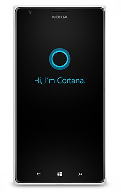
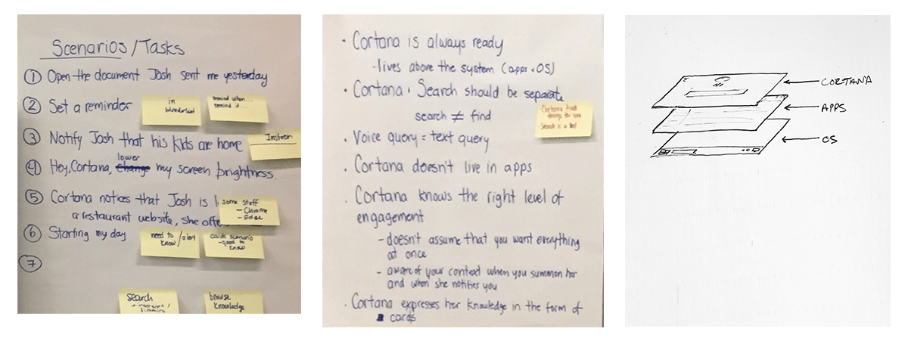
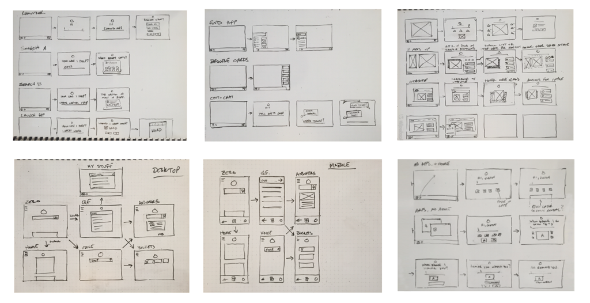
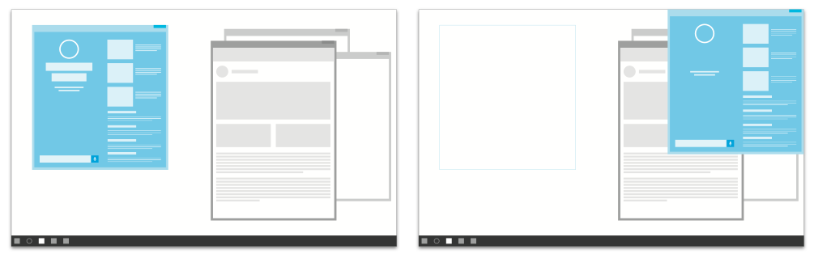
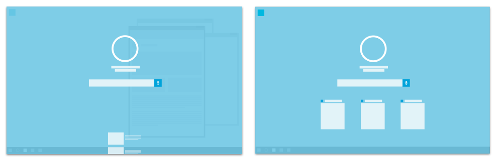
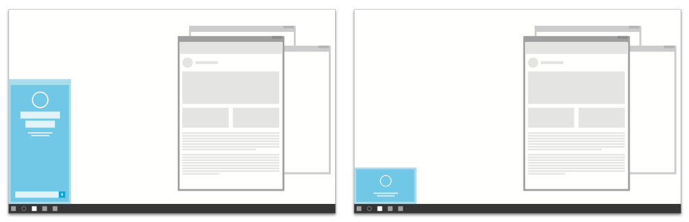
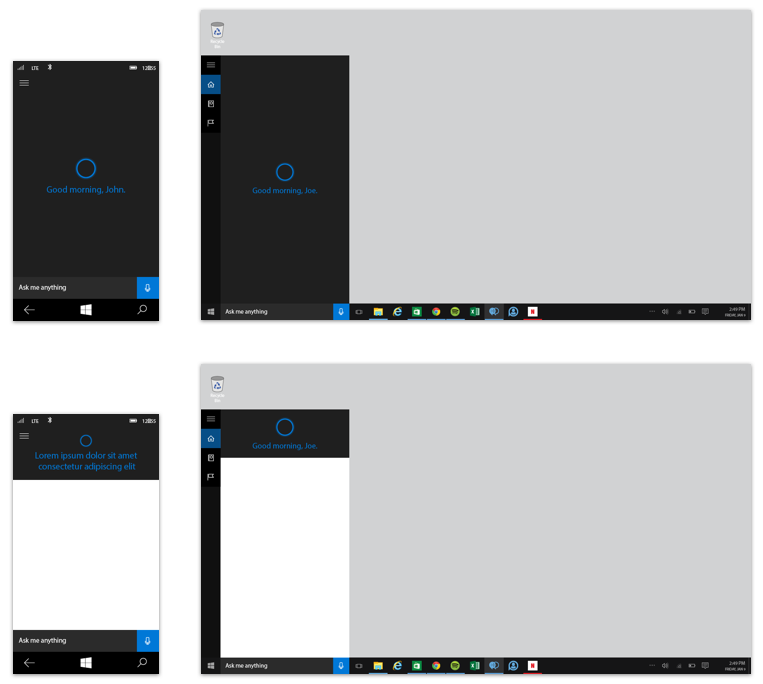
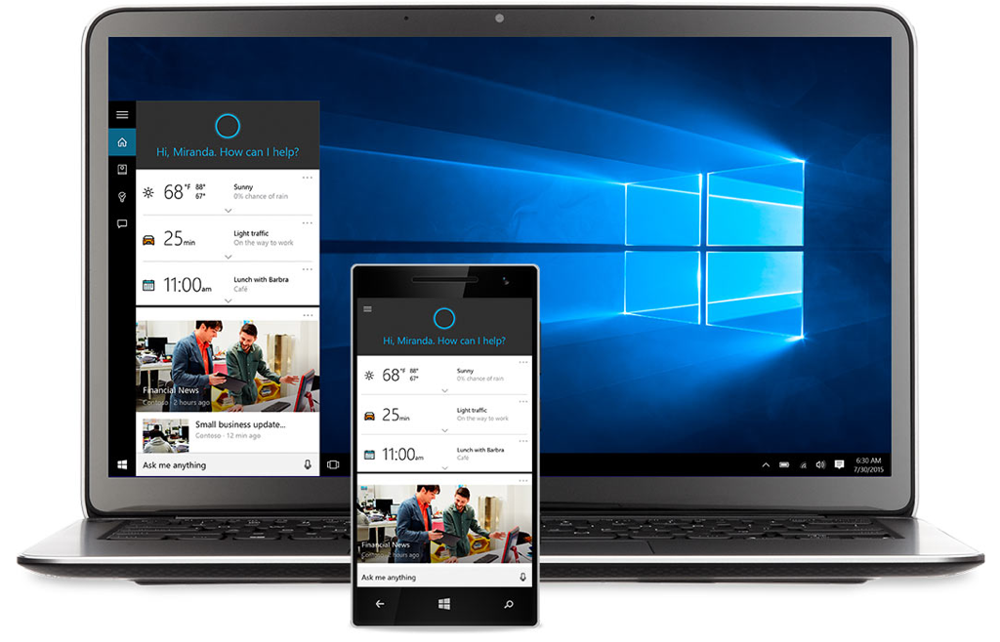

Cortana is Microsoft's digital personal assistant. It had already launched on Windows Phone 8.1 and it was my team's task to bring Cortana to the desktop in Windows 10.
We created a set of scenarios to test our designs and, based on insight and feedback from the Windows Phone release, I defined early principles to guide the desktop experience.

Using the scenarios and principles as guides, I sketched a range of flows and variations. I then explored several layout concepts to see how different interactions would work with our user scenarios.




The final design was based on the "Flyout" concept. It was selected because it could be quickly deployed and dismissed to accomplish a task, it didn't obscure the entire screen, and it was in a predictable location. It also shares similar interaction properties as the Start menu and has the same ratios as the mobile version which helped keep engineering costs down.

Cortana launched with Windows 10 to over 200 million users. The flyout design I created became the foundation for how the assistant appeared on the desktop.
